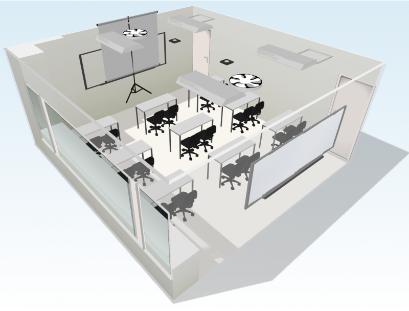

Peng-Hsuan Li 李朋軒 [CV]
Bio
Peng-Hsuan Li is currently a research assistant at Institute of Information Science, Academia Sinica, advised by Dr. Wei-Yun Ma at the Chinese Knowledge and Information Processing Lab (CKIP). His research interest is in computational linguistics.
Previously, Peng-Hsuan received his M.Sc. and B.Sc. degree at Department of Computer Science & Information Engineering, National Taiwan University, advised by Prof. Jane Yung-Jen Hsu at the Intelligent Agents Lab (iAgents). He did research in human activity recognition.
Peng-Hsuan has 3 year working experiences in security industry. He also has experiences in college teaching and 3 year high school after-class teaching.
Please see his CV for more details about his education, experience, publication, award, and teaching.
Project
-
CKIP Chinese NER
Peng-Hsuan Li, Douglas Wu, and Wei-Yun Ma

-
CKIP Ancient Chinese Document NER
Peng-Hsuan Li, Douglas Wu, and Wei-Yun Ma

-
Classroom Population Recognition without Lens
Yao-Hua Yang, Peng-Hsuan Li, Shih-Han Wang, and Jane Yung-Jen Hsu
CSIE 2015 Undergraduate Project Exhibition
